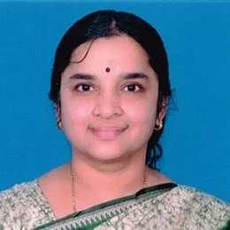
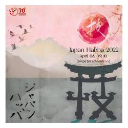
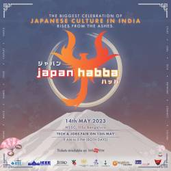

A Storied History
This isn't our first rodeo — 2025 marks the twentieth year of Japan Habba. Let's take a look back down the memory lane to past editions of Japan Habba.
| Edition | Date(s) | Venue | Theme | Chairperson | |
|---|---|---|---|---|---|
| 1st | September 21, 2005 | Bangalore University | Satoshi Hata | ||
| 2nd | September 24, 2006 | Bangalore University | Deepak Kumar | ||
| 3rd | August 10, 2007 | Raj Bhavan | India-Japan Friendship Year | ||
| 4th | September 21, 2005 | Bangalore University | India-Japan Friendship Year | ||
| 5th | September 28, 2008 | Bangalore University | 鶴 Tsuru | Satoshi Hata | |
| 6th | May 31, 2009 | Bangalore University | 舞い Mai (Dance) | Satoshi Hata | |
| 7th | February 21, 2011 | Bangalore University | 花 Hana | Satoshi Hata | |
| 8th | February 19, 2012 | Bangalore University | 絆 Kizuna | Preet Vidyanand | |
| 9th | February 23-24, 2013 | Bangalore University | 漢字 Kanji | Senthil Murugan | |
| 10th | February 23, 2014 | Mount Carmel College | 達磨 Daruma |  Srividhya A. | |
| 11th |  |
February 15, 2015 | Bangalore University | 団扇 Uchiwa | Srividhya A. |
| 12th | February 21, 2016 | Bangalore University | 提灯 Chochin | Srividhya A. | |
| 13th | February 12, 2017 | St. Joseph's Auditorium | 招き猫 Maneki-Neko | Srividhya A. | |
| 14th | February 3, 2018 | Indian Institute of Science | 青森 Aomori | Srividhya A. | |
| 15th | February 2-3, 2019 | Indian Institute of Science | 七夕 Tanabata | Srividhya A. | |
| 16th | February 8-9, 2020 | Indian Institute of Science | 水墨画 Suibokuga | Srividhya A. | |
| 17th |  |
February 20-21, 27-28, 2021 | YouTube, Facebook | 光 Hikari | Srividhya A. Program Planning: Meghna V. Ravoor & Nivi Pal Committee: Aditi A., Nikhil Ravikumar, Tarun Prabhu |
| 18th |  | April 8-10, 2022 | YouTube, Facebook | 技 Waza | Srividhya A. Program Planning: Meghna V. Ravoor & Nivi Pal Committee: Aditi A., Nikhil Ravikumar, Tarun Prabhu |
| 19th |  | May 13-14, 2023 | Indian Institute of Science | 不死鳥 Phoenix |  Pavithra Dashmi Parthan Pavithra Dashmi ParthanCore Committee: Anjana S., Meghna V. Ravoor, Nivi Pal, Saori Sarkar, Savitha K. |
Past Partners
We stand on the shoulders of these giants.